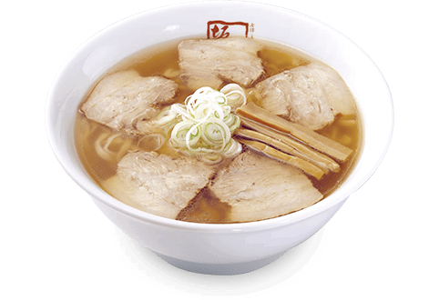
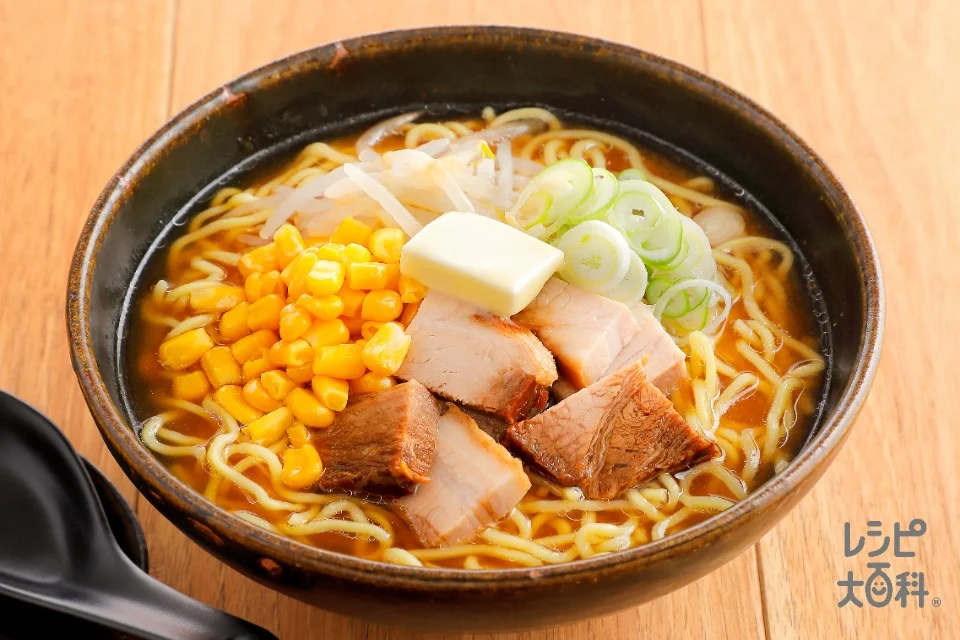
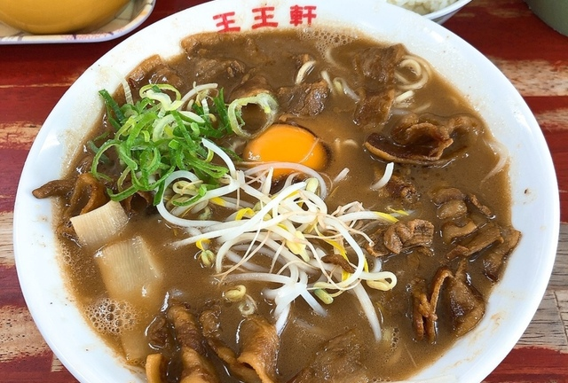

<!DOCTYPE html>
<html lang="en">

</html>

<head>
    <link rel="stylesheet" href="box-layout-style.css">
    <meta charset="UTF-8">
    <meta name="viewport" content="width=device-width, initial-scale=1.0">
    <title>recommendation</title>
</head>

<body>
    <h1>My recommendation</h1>
    <div class="container">

        <div class="container">

            <!-- 上のラーメン3つ -->
            <div class="ue-ramen">
                <div class="ra-men">
                    <h2>喜多方ラーメン</h2>
                    <div class="image-box">
                        
                    </div>
                    <a href="#">喜多方ラーメン公式</a>
                    <p>福島県発祥のあっさり醤油スープにもちもちの平打ち縮れ麺が特徴。朝ラーメンでも有名。</p>
                </div>

                <div class="ra-men">
                    <h2>博多豚骨ラーメン</h2>
                    <div class="image-box">
                        
                    </div>
                    <a href="#">博多ラーメン公式</a>
                    <p>白濁した豚骨スープと極細ストレート麺が特徴。替え玉制度も有名。</p>
                </div>

                <div class="ra-men">
                    <h2>和歌山ラーメン</h2>
                    <div class="image-box">
                        
                    </div>
                    <a href="#">和歌山ラーメン公式</a>
                    <p>豚骨醤油ベースの濃厚スープに、早寿司を添えるスタイルが独特な和歌山県のご当地ラーメン。</p>
                </div>
            </div>

            <!-- 下のラーメン3つ -->
            <div class="sita-ramen">
                <div class="ra-men">
                    <h2>札幌味噌ラーメン</h2>
                    <div class="image-box">
                        
                    </div>
                    <a href="#">札幌ラーメン公式</a>
                    <p>濃厚な味噌スープにバターとコーンがトッピングされた北海道の冬の定番ラーメン。</p>
                </div>

                <div class="ra-men">
                    <h2>徳島ラーメン</h2>
                    <div class="image-box">
                        
                    </div>
                    <a href="#">徳島ラーメン公式</a>
                    <p>濃い醤油豚骨スープと甘辛い豚バラ肉、生卵のトッピングが特徴。白ご飯と相性抜群！</p>
                </div>

                <div class="ra-men">
                    <h2>富山ブラックラーメン</h2>
                    <div class="image-box">
                        
                    </div>
                    <a href="#">富山ブラック公式</a>
                    <p>醤油を大量に使った真っ黒なスープが特徴の富山のご当地ラーメン。しょっぱさとコクがクセになる味わいで、白ご飯と一緒に食べるのが定番。</p>
                </div>
            </div>

        </div>
</body>


</html>